Dóndeprotegerme
-
Bajo una mesa o escritorio resistente, lejos de ventanas, lámparas y muebles altos. El IDIGER lo recomienda así, y la UNGRD coincide en refugiarse bajo muebles macizos.

Fuente: IDIGER y UNGRD.
-
Junto a una columna, solo si la construcción es sismorresistente. Es lo que indica la UNGRD para ese tipo de estructura. Tienes que saber dónde hay columnas resistentes.

Fuente: IDIGER y UNGRD.
-
Si estás en tu cama, permanece acostado allí mismo (o a un costado de la cama si hay riesgo de que caiga algo pesado sobre ella).

Fuente: Cruz Roja
-
Si no hay mueble resistente: protege cabeza y cuello con los brazos y aléjate de vidrios, muebles altos y lámparas.

Fuente: UNGRD
-
Marco de la puerta. La UNGRD lo califica de inseguro: la idea viene de casas de adobe con marcos de madera maciza, y en edificaciones modernas la abertura en el muro es un punto débil.

Fuente: UNGRD
-
Triángulo de la vida. La UNGRD explica que viene de estructuras livianas de Estados Unidos, que no aplica a construcciones de concreto y mampostería, y que carece de estudios que lo respalden.

Fuente: UNGRD
-
Ventanas, vidrios, lámparas, espejos, relojes, estanterías y muebles altos. El IDIGER pide alejarse de ventanas, vidrios, lámparas y muebles que puedan caer.

Fuente: IDIGER
-
El refrigerador como refugio: no tiene respaldo. La guía pide dejar los electrodomésticos pesados en partes bajas y anclados.

Fuente: UNGRD